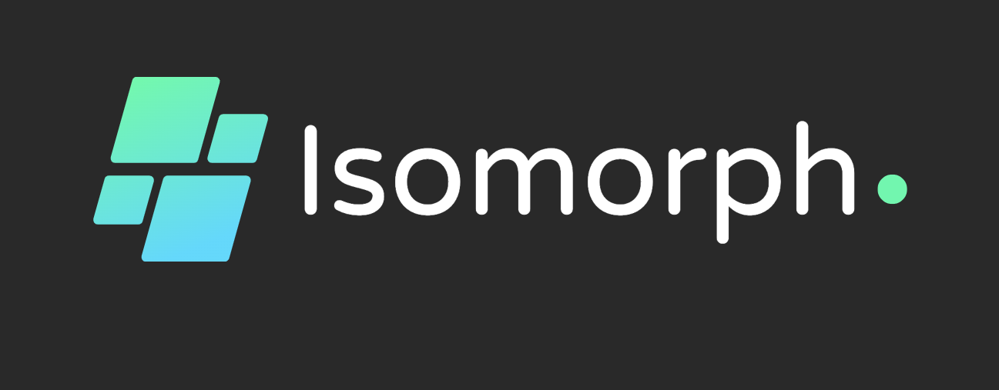

Unlocking the power of liquid staking on Fuel Network
Traditional staking suffers from a lack of liquidity, limiting users' ability to access their staked assets. This hinders DeFi adoption and constrains capital efficiency.
Isomorph Staking Protocol provides a seamless liquid staking solution on Fuel Network, enabling users to stake ETH and receive isoTokens that can be used across DeFi applications.
Users stake their ETH with the Isomorph Staking Protocol and receive isoTokens in return. These isoTokens represent their staked ETH and can be freely used in DeFi applications while their original stake continues to earn rewards.
The global staking market is expected to grow from $14 billion in 2021 to $50 billion by 2026, driven by the increasing adoption of proof-of-stake cryptocurrencies and the demand for liquidity solutions.
Isomorph Staking Protocol differentiates itself by providing a seamless liquid staking solution tailored for the Fuel Network ecosystem, leveraging its unique features and capabilities.
Isomorph Staking Protocol is developed by a team of experienced blockchain engineers and researchers with a proven track record in building innovative DeFi solutions.
Since launching the initial version of the protocol, Isomorph Staking has achieved the following milestones:
We are seeking a grant from the Fuel Network Foundation to accelerate the development and adoption of the Isomorph Staking Protocol. The funding will be used for the following:
Fuel Network's unique features and capabilities make it an ideal platform for the Isomorph Staking Protocol:
By supporting the Isomorph Staking Protocol, you can be part of a transformative liquid staking solution that unlocks the full potential of the Fuel Network ecosystem.
Together, we can drive the widespread adoption of decentralized finance and empower users to maximize the value of their crypto assets.